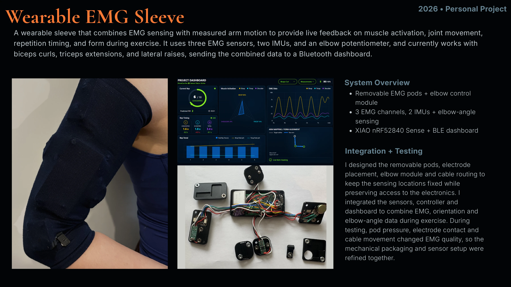

2026 • Personal Project
A wearable sleeve that combines EMG sensing with measured arm motion to provide live feedback on muscle activation, joint movement, repetition timing, and form during exercise. It uses three EMG sensors, two IMUs, and an elbow potentiometer, and currently works with biceps curls, triceps extensions, and lateral raises, sending the combined data to a Bluetooth dashboard.
I designed the removable pods, electrode placement, elbow module and cable routing to keep the sensing locations fixed while preserving access to the electronics. I integrated the sensors, controller and dashboard to combine EMG, orientation and elbow-angle data during exercise. During testing, pod pressure, electrode contact and cable movement changed EMG quality, so the mechanical packaging and sensor setup were refined together.
Technical detail